Electricity can act like a magnet
The chapter begins with a simple clue: current in a wire can move a compass needle.
Key ideas
- A current-carrying wire makes a magnetic effect.
- Oersted's experiment linked electricity and magnetism.
- A compass is the small magnet that reveals the change.
Page previews
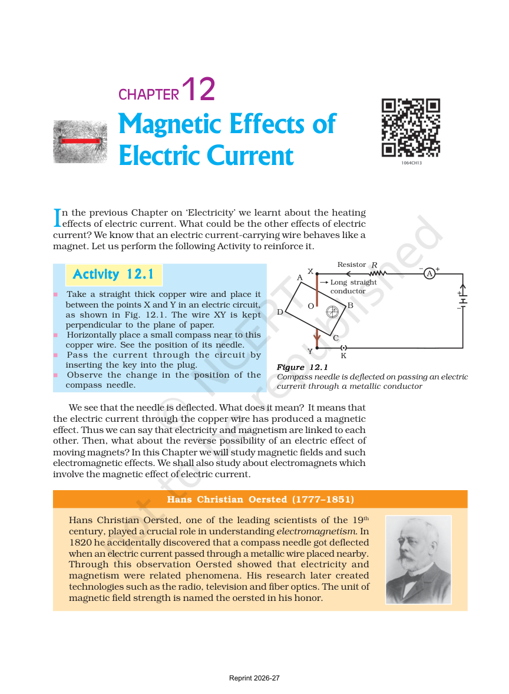
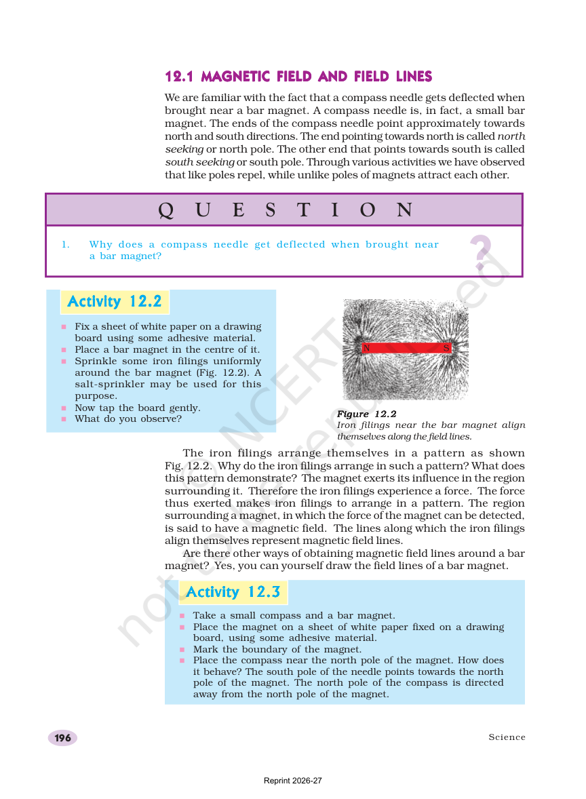
Current makes magnetism
The first idea is easy to test: when current flows, the wire behaves like a magnet for nearby objects.
Key ideas
- The needle swing is evidence of a magnetic field.
- The effect happens around the wire, not inside the compass.
- Electricity and magnetism are connected ideas.
Page previews
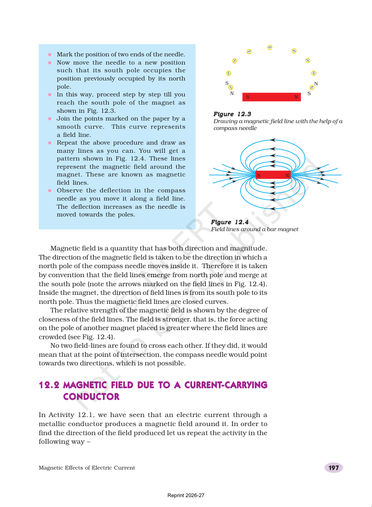
Reading magnetic field lines
Field lines are drawings that show direction and strength around a magnet.
Key ideas
- Outside the magnet, lines go from north to south.
- Closer lines mean a stronger field.
- Field lines do not cross each other.
Page previews
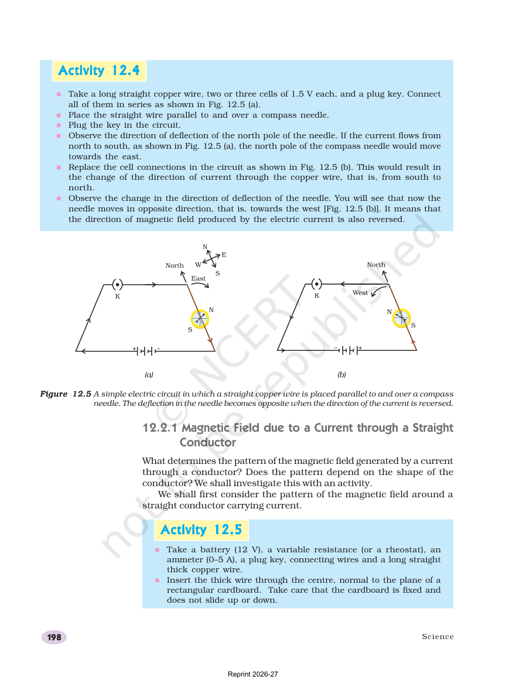
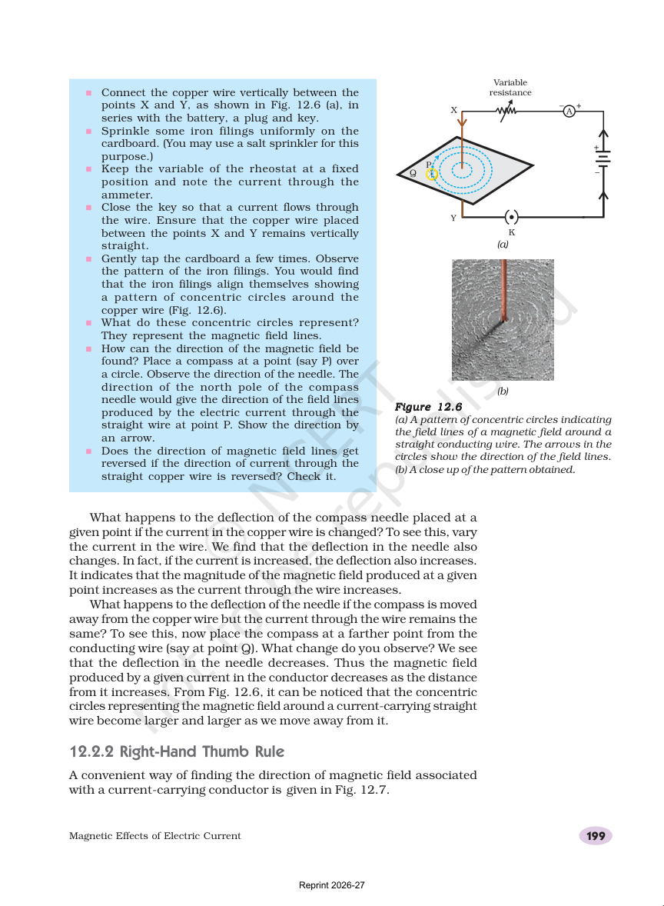
Wires, coils, and electromagnets
Different wire shapes make different field patterns, and a coil with soft iron becomes an electromagnet.
Key ideas
- A straight wire makes circles around it.
- A solenoid acts like a bar magnet.
- Soft iron helps make a stronger electromagnet.
Page previews
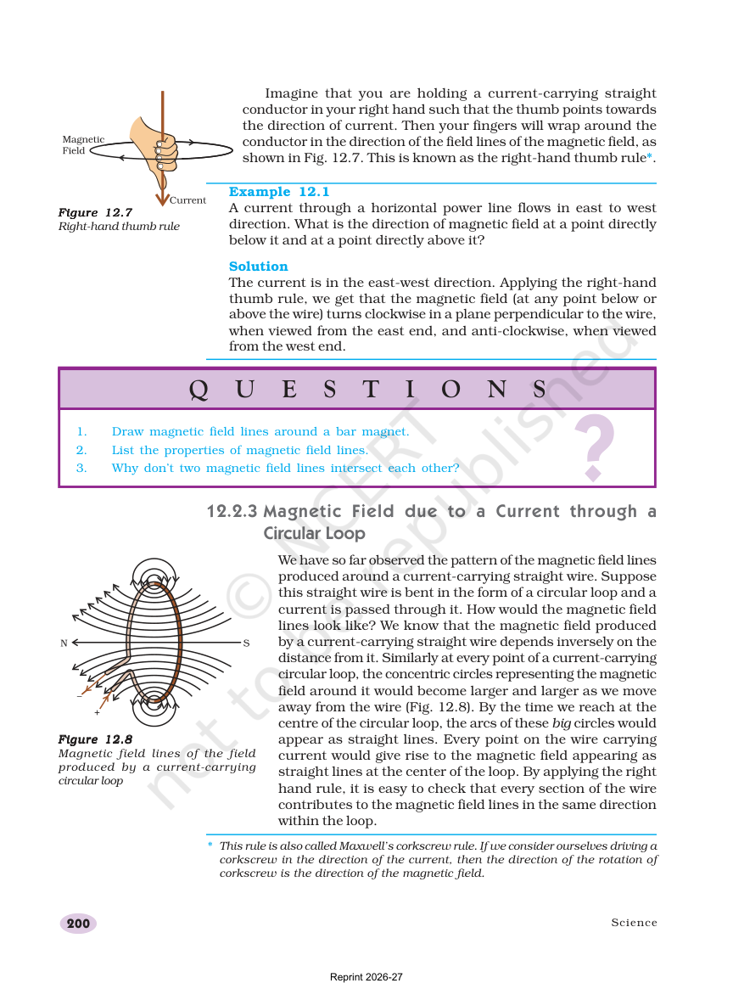
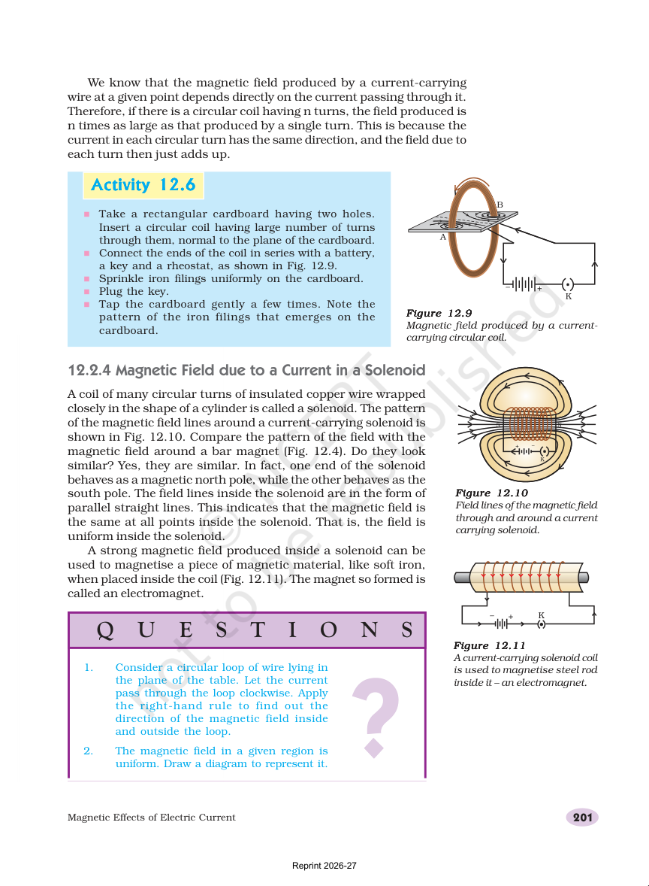
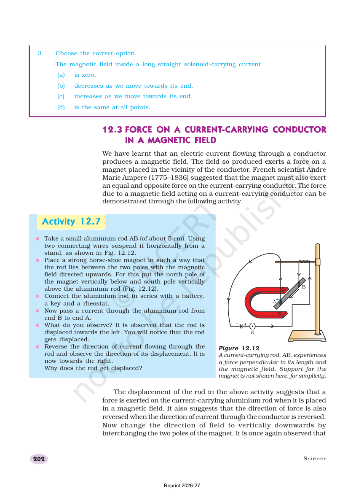
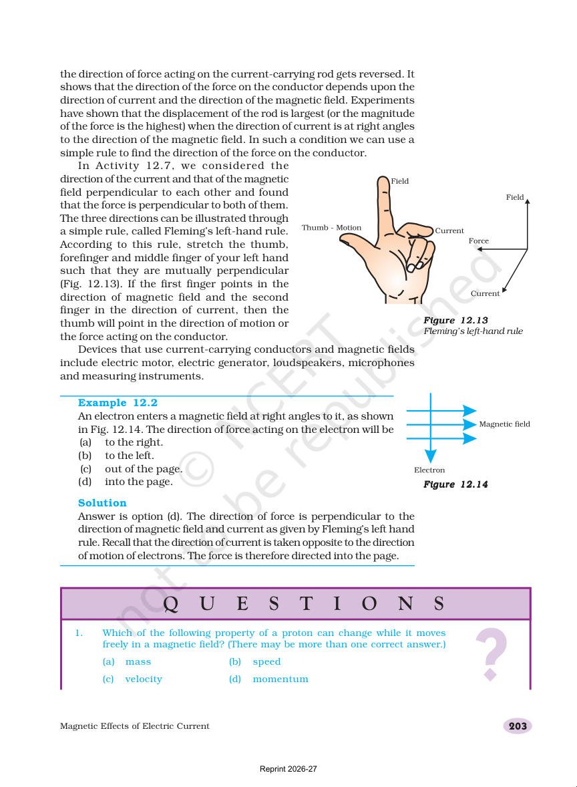
Circuit safety
The last part of the chapter is about staying safe at home with fuses, earth wires, and careful use of power.
Key ideas
- A fuse protects against extra current.
- An earth wire helps stop shocks.
- Too many appliances can overload one circuit.
Page previews
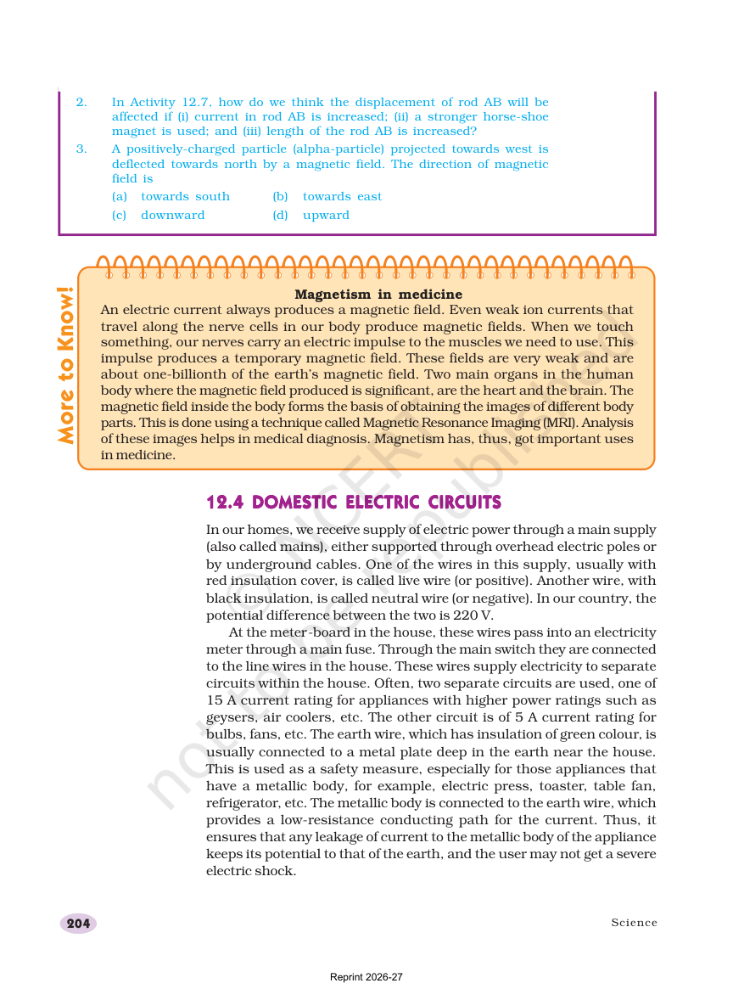
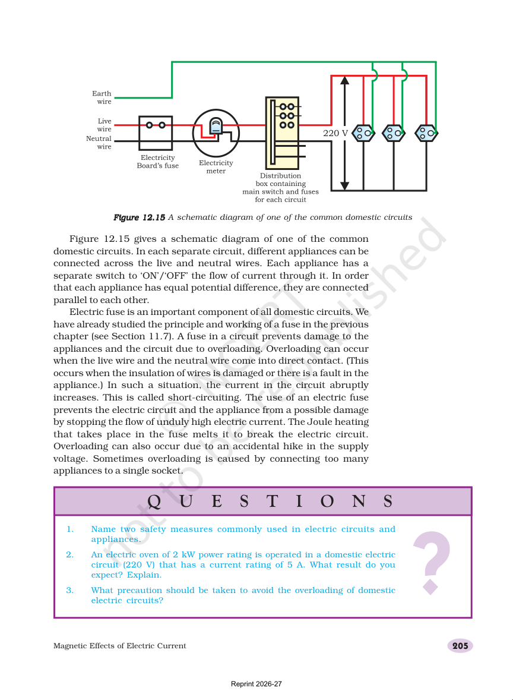
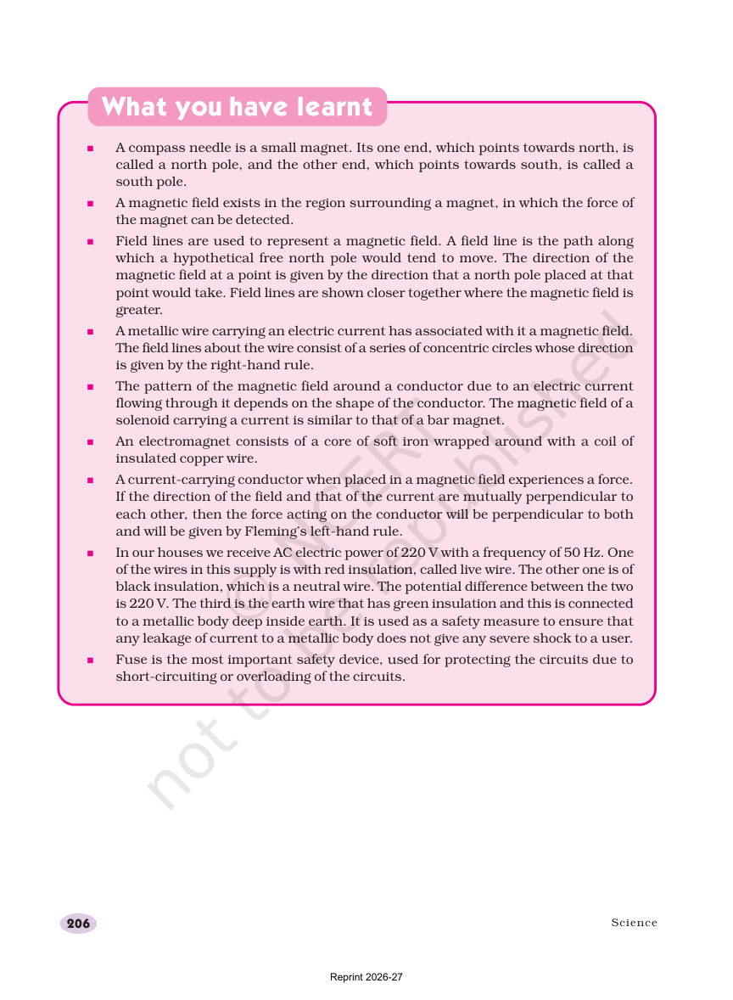
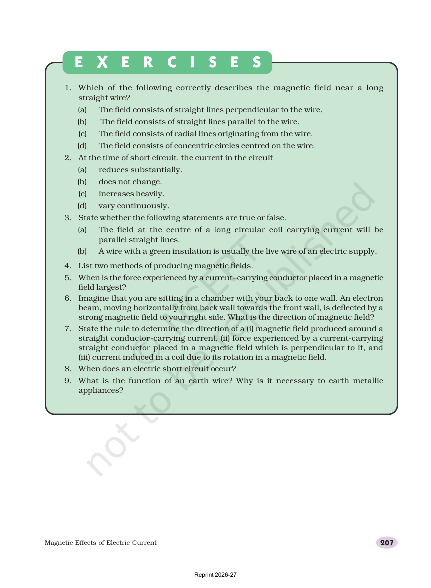
Quick self-check
These questions are saved in this browser. Pick an answer, see the feedback, and use Try again to reset everything.
Current and magnetism
A wire with current can behave like a magnet.
Magnetic field lines
Lines help us picture direction and strength.
Wires and coils
Wire shape changes the magnetic pattern.
Safety
Protection against shocks, overloads, and short circuits.